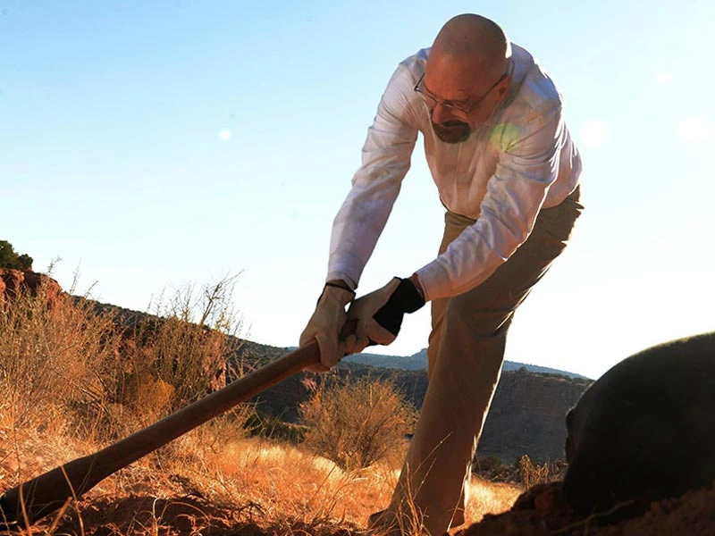
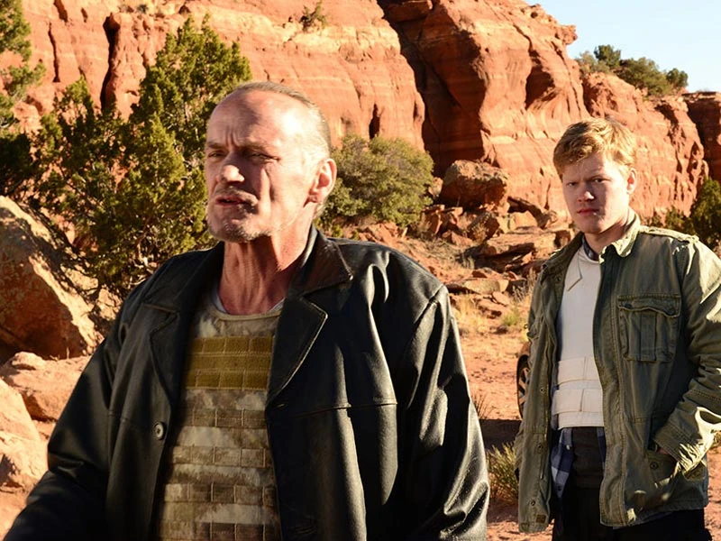
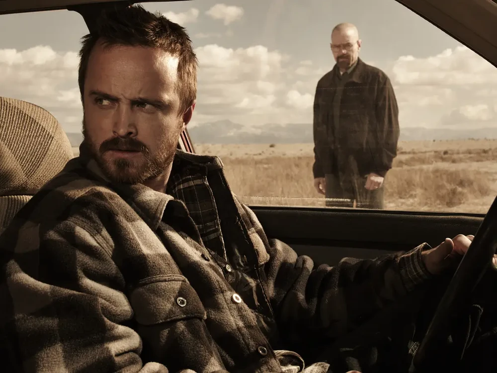
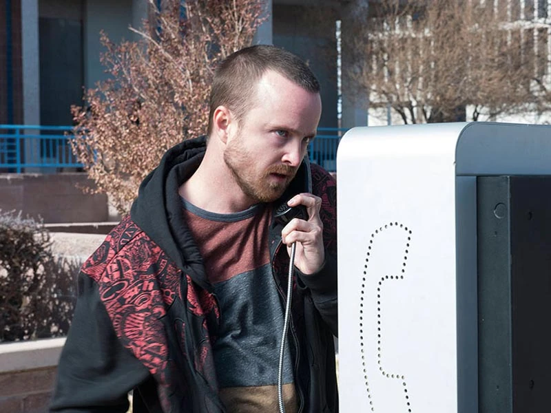
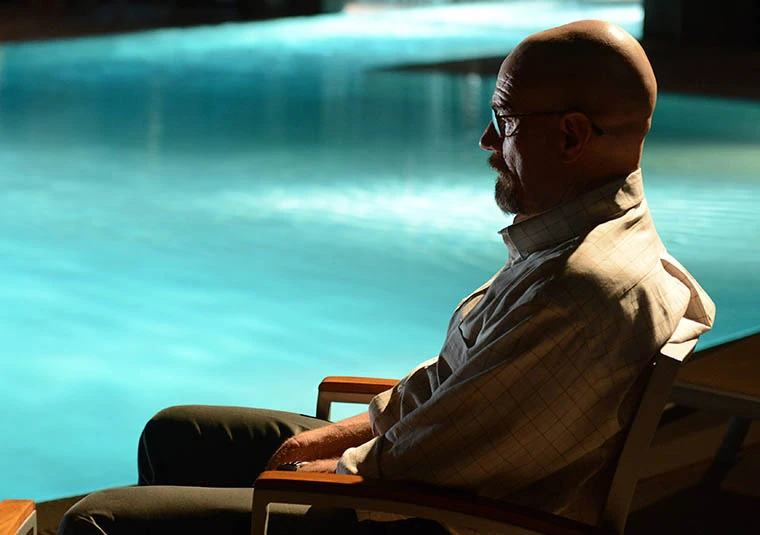
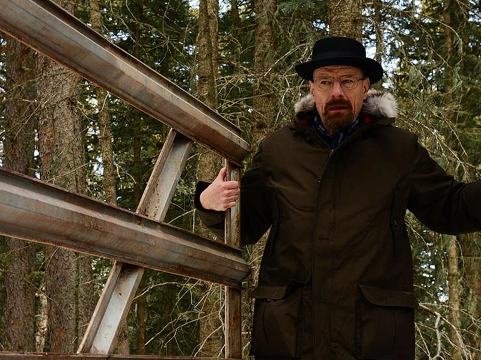
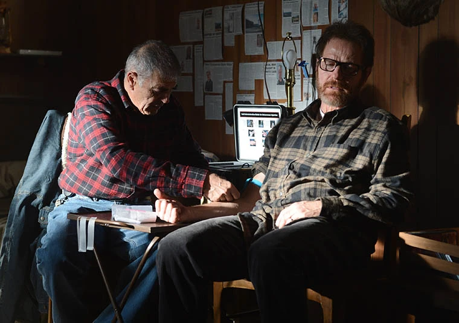
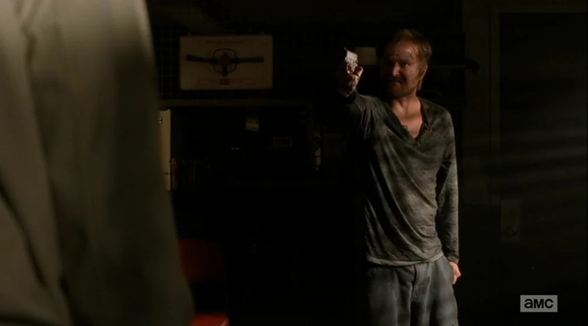
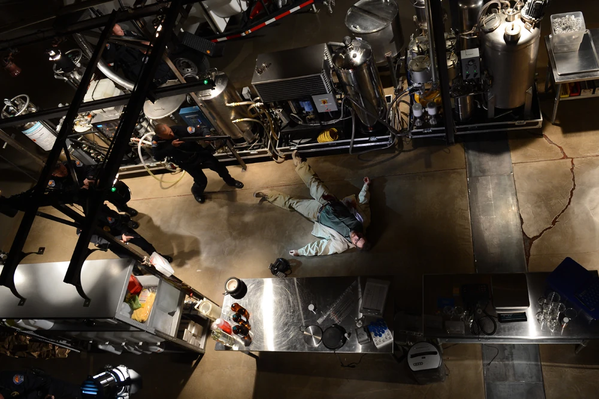

Temporada 5: El Ascenso y Caída de Heisenberg
Un año en el futuro, Walter White se sienta solo en un restaurante con la cabeza llena de pelo y barba. Se encuentra con Lawson , su antiguo traficante de armas, quien le da la llave de un coche a cambio de algo de dinero. Walt toma una pastilla y sale del restaurante, se acerca al coche y revela que acaba de comprar una ametralladora M60 que está escondida en el maletero del coche.
De regreso al presente, Walt regresa a casa después de matar finalmente a Gustavo Fring , se deshace de todo lo que lo vincula con su exitoso complot contra Gus y luego esconde la ricina que robó de Jesse Pinkman dentro de su dormitorio, pero la computadora portátil que contiene las imágenes de seguridad de Walt está en poder de la policía. Walt llama a Jesse y Mike Ehrmantraut para organizar una misión para ayudarlo a destruir la computadora portátil usando un electroimán industrial, pero en el proceso, la policía termina descubriendo una cuenta bancaria secreta en poder de Gus que se usó para pagar a sus empleados. De regreso a casa, Walt intenta perdonar a Skyler White , pero el daño ya está hecho: ella le tiene miedo. (" Vive libre o muere ")
Debido a que Skyler utilizó el dinero que Walt ganó de la operación de Gus para pagar la deuda de Ted Beneke con el IRS, Walt cree que no tiene otra opción que comenzar a cocinar metanfetamina nuevamente para recuperar el dinero que perdió. Walt y Jesse intentan convencer a Mike de que se una a ellos, pero él se niega. Mientras tanto, la policía descubrió que un ejecutivo de Madrigal Electromotive GmbH , Peter Schuler , estaba trabajando con Gus en el negocio de la metanfetamina y era una de las muchas personas a las que se les pagaba con la cuenta bancaria descubierta. Peter se suicida antes de que la policía alemana pueda llegar hasta él.
Preocupada por esta situación, Lydia Rodarte-Quayle , otro de los contactos de Gus que trabaja para Madrigal, intenta ponerse en contacto con Mike. Le ofrece pagarle para que elimine a los once hombres de la cuenta bancaria antes de que la policía los alcance también, pero Mike se niega. Lydia intenta entonces que maten a Mike, pero fracasa. Mike decide utilizar a Lydia para ayudar a Walt y Jesse en su recién fundado Imperio de la droga . (" Madrigal ")
Walt, Jesse y Mike comienzan una sociedad a tres bandas para distribuir metanfetamina nuevamente, aunque no confían completamente en Lydia. Sus planes para la fabricación de metanfetamina casi no tienen éxito porque Saul Goodman no puede encontrar sitios satisfactorios, salvo uno: una empresa de control de plagas conocida como Vamonos Pest . Walt y Jesse usan las carpas de fumigación de la empresa en casas al azar como un laboratorio móvil: después de que las carpas se colocan en una casa, Jesse y Walt usan un laboratorio móvil de metanfetamina dentro de la casa para producir su producto. Skyler se da cuenta de que Walter no está exactamente libre de su pasado de fabricación de metanfetamina y comienza a temer por su vida y la de sus hijos debido al peligro que implica. Mientras tanto, Walt está preocupado de que Jesse forme una nueva familia con Andrea Cantillo y eso intervenga en su nueva operación, por lo que manipula a Jesse para que rompa con ella. Walt y Mike entran en una acalorada discusión cuando Walt descubre que Mike planea usar casi la mitad de su dinero de la distribución para pagar a los nueve empleados de la cuenta bancaria que ahora están todos en prisión. (" Pago por riesgo ")
Hank Schrader es promovido a nuevo ASAC de la DEA en Albuquerque por su trabajo en el descubrimiento del imperio de drogas de Gus. Decide iniciar una nueva investigación sobre los nueve empleados encarcelados, sabiendo que todavía hay más personas conectadas con Gus. Los Schrader se reúnen más tarde con los White para la fiesta de cumpleaños de Walt, donde Skyler intenta suicidarse caminando hacia la piscina. Después de ser salvada, le pide a Marie Schrader que cuide de sus hijos. Después de que los Schrader se van, Skyler le revela a Walter que, sin otras opciones, ella solo está esperando pacientemente a que su cáncer regrese.
Mientras tanto, el flujo de metilamina se interrumpe porque Lydia encontró un rastreador GPS pegado al fondo de uno de los barriles, lo que obligó a Walter, Jesse y Mike a pensar en otra opción para mantener la producción de metanfetamina. Walt decide que la metilamina seguirá fluyendo pase lo que pase: apenas están comenzando. (" Fifty-One ")
Mike secuestra a Lydia, planeando matarla si no revela que el GPS en el barril era su plan para liberarse de la operación, pero terminan descubriendo que ella no estaba mintiendo; la DEA plantó el rastreador. Lydia le ofrece a Walt otra opción para obtener metilamina: robar un tren que transporta un gran cargamento. El atraco casi se ve comprometido cuando un niño los ve, pero es baleado por un nuevo empleado para el atraco, Todd Alquist . (" Dead Freight ")
Mientras la DEA comienza a rastrear a Mike, y con la reciente muerte del niño, tanto Jesse como Mike diseñan una salida permanente para sí mismos del negocio. Planean vender su metilamina por $ 5 millones cada uno a Declan , un importante productor y distribuidor regional de metanfetamina. Walt descarrila el plan de Jesse y Mike cuando se niega a vender su parte de la metilamina, lo que obliga a Mike a encerrar a Walt hasta que se cierre el trato. Walt puede escapar y se lleva la metilamina con él, luego les da a Mike y Jesse otra opción para ganar dinero con la producción como él quiere y al mismo tiempo Mike y Jesse pueden dejar el negocio, "todos ganan". (" Buyout ")
Walt usa la infamia de su personaje de Heisenberg para llegar a un acuerdo de distribución con Declan y negociar la indemnización de 5 millones de dólares para Mike. Jesse está decidido a dejar el negocio, independientemente de su parte financiera, por lo que Walter recluta a Todd como su ayudante de cocina. Después de que la DEA se acerca a Mike, decide irse para siempre.
Walt se reúne con Mike en el desierto para que puedan arreglar las cosas antes de que Mike se vaya de Nuevo México. Walt dice que hay una última cosa que le pide a Mike: el nombre de los nueve empleados de Gus que podrían hablar en prisión, pero Mike se niega a dárselos, culpando a Walt por todas las cosas malas que sucedieron hasta ahora. Walter dispara impulsivamente a Mike después de una confrontación, y luego se arrepiente de la acción cuando recuerda que Lydia tiene los nombres. (" Say My Name ")
Después de deshacerse del cuerpo de Mike, Walt logra obtener los nombres de Lydia y organiza que los hombres sean asesinados por asociados del tío de Todd, Jack Welker , líder de una pandilla de supremacistas blancos .
A cambio de su seguridad, Lydia organiza el envío del producto de Walt a la República Checa a través de las sucursales más recónditas de Madrigal. En los meses siguientes, Walt obtiene una cantidad extraordinaria de dinero, tanto que, después de que Skyler le suplicara, finalmente decide retirarse y deja en su puerta los cinco millones de dólares que le debía a Jesse. Meses después, la familia White vuelve a vivir feliz bajo el mismo techo.
Todo parece ir bien hasta que un día, durante una barbacoa con los White y los Schrader, Hank se disculpa para ir al baño y, mientras busca algo para distraerse, descubre un libro de poesía de Walt Whitman dedicado a "WW" por "GB". Hank, recordando una conversación con Walt sobre las iniciales de su investigación anterior y suponiendo que "GB" es Gale Boetticher , ve claramente que Walter es Heisenberg. (" Gliding Over All ")
Hank y Marie abandonan la residencia de los White , y Hank se lleva en secreto el libro Leaves of Grass . En casa, Hank decide tomarse unos días libres del trabajo para investigar todo lo relacionado con Blue Sky desde su primera aparición. Mientras tanto, Lydia visita a Walt en el lavadero de coches. Quiere que vuelva a cocinar porque la calidad de la metanfetamina está bajando con otros cocineros, pero Walt se niega.
Jesse vive infeliz con sus 5 millones de dólares y decide tirar el dinero por un barrio empobrecido de Albuquerque. Walt se da cuenta de que su libro ha desaparecido y visita a Hank, sospechando que su cuñado puede haber descubierto algo. Cuando se encuentran, Hank revela que lo sabe todo y lanza varias acusaciones contra Walt después de golpearlo, pero Walt revela que su cáncer ha regresado y que, incluso si lo procesan, no vivirá lo suficiente para ver el interior de una celda de la cárcel. También le dice a Hank que "pise con cuidado". (" Dinero sangriento ")
Hank se acerca a Skyler, tratando de convencerla de que le dé evidencia sobre las actividades criminales de Walt, pero falla ya que ella finge un ataque de pánico. Mientras tanto, Walt le paga a Huell y Kuby para que le traigan su montón de dinero dentro de un grupo de barriles y luego conduce los barriles al desierto , donde los entierra exactamente en el mismo lugar donde él y Jesse tenían su primer sitio de cocina. Después de regresar a casa, Skyler convence a Walt de que pueden tener la oportunidad de derrotar a Hank.
Jesse es arrestado por arrojar 5 millones de dólares en efectivo por la ventanilla de su coche después de estrellarse. Hank se entera de esto y decide interrogar a Jesse, sabiendo que es uno de los antiguos socios de Walt en el negocio de las drogas. En algún lugar de Arizona, Lydia contrata al tío de Todd, Jack, para asesinar a Declan y sus hombres como parte de un plan para apoderarse de su operación de metanfetamina. (" Buried ")
Hank intenta obligar a Jesse a que le dé algo sobre Walt, pero su intento falla cuando Saul llega justo a tiempo, exigiéndole a Hank que se vaya y luego se queja con Jesse sobre su reciente acción. Después de aplastar con éxito el imperio de Declan, Jack, su lugarteniente Kenny y Todd conducen el laboratorio de metanfetamina a Nuevo México para comenzar su nueva operación.
Walt y Skyler comienzan su plan para obligar a Hank a alejarse de ellos, grabando un video de confesión. Le entregan el video a los Schrader en un restaurante. Hank y Marie miran el video, solo para descubrir que la confesión de Walt es falsa, incriminando a Hank como el cerebro detrás de todo el imperio de drogas de Heisenberg. Cuando descubre que el negocio de drogas de Walt pagó sus facturas médicas después de que le dispararan, Hank se da cuenta de que nunca podrá defenderse de las acusaciones en el video, y que su carrera como agente de la DEA ha terminado.
Mientras tanto, Walt decide convencer a Jesse de que abandone el estado, diciendo que Jesse merece un nuevo comienzo. Jesse está enfurecido, le dice a Walt que la única razón por la que necesita que se vaya es para proteger a su propia familia, y si rechaza la oferta de Walt, terminará muerto como lo hizo Mike. Walt abraza a Jesse y acepta irse. Saul hace la llamada al extractor . Mientras tanto, Jesse intenta encender un cigarrillo de marihuana. Saul le explica a Jesse que el extractor no da segundas oportunidades, por lo que deberá mantenerse a raya. Para asegurarse de que Jesse se comporte correctamente, Saul le dice a Huell que robe en secreto la hierba de Jesse de su bolsillo.
Jesse espera el extractor junto a la carretera y se da cuenta de que su hierba ha desaparecido. Jesse relaciona esto con el envenenamiento de Brock Cantillo hace unos meses y se da cuenta de que todo era parte del plan de Walt para poner a Jesse en contra de Gus: Walt fue quien envenenó a Brock. Jesse regresa a la oficina de Saul y lo ataca, luego conduce hasta la residencia de los White, donde derriba la puerta a patadas y comienza furiosamente a verter gasolina sobre los muebles. (" Confesiones ")
Saul le informa a Walt sobre lo que sucedió, por lo que toma su arma y conduce hasta su casa, donde encuentra la sala de estar empapada en gasolina, pero no hay señales de Jesse. Después de limpiarlo, Walt intenta engañar a Skyler para que piense que tuvo un accidente en una gasolinera con la bomba de gasolina. Los White deciden pasar la noche en un hotel hasta que el olor a gasolina desaparezca de su casa. Skyler le revela a Walt que no cree su historia del "mal funcionamiento de la bomba". Walt le dice la verdad y ella dice que la mejor opción es matar a Jesse.
Un breve flashback revela que Jesse estaba a punto de quemar la residencia de los White cuando Hank, que pasó las últimas horas siguiendo la pista de Jesse, entra y lo convence de que dé testimonio sobre las actividades criminales de Walt. Hank lleva a Jesse a su propia casa, donde él y Steven Gomez graban una confesión en video de todo lo que Walt ha hecho. Gomez explica que necesitan pruebas sólidas sobre Walt. Walt intenta llamar a Jesse, diciendo que necesitan reunirse, y Hank y Gomez se dan cuenta de que esta es la oportunidad que estaban esperando.
Hank le pone un micrófono a Jesse y lo envía a encontrarse con Walt en una plaza pública, pero Jesse tiene miedo de que Walt lo mate. Corre a un teléfono público y llama a Walt, amenazándolo con golpearlo "donde realmente vive". Un furioso Hank recoge a Jesse, pero Jesse le explica que hay otra forma de atrapar a Walt. Mientras tanto, Walt llama a Todd y le dice que tiene otro trabajo para su tío. (" Perro rabioso ")
Todd recibe una llamada telefónica de Walt justo después de completar su primera cocción en la nueva operación de Lydia, pero no logró el color azul característico del producto. Por teléfono, Walt le dice que quiere matar a Jesse. Bajo una autopista, Hank y Gómez escuchan el plan de Jesse para atrapar a Walt. Necesitan encontrar la única prueba sólida que queda de que Walt es un genio criminal: sus millones de dólares.
Hank interroga a Huell y lo engaña para que se quede dentro de una casa segura por su propia seguridad. Consigue reunir información sobre una furgoneta alquilada que Walt utilizó para llevarse el dinero. Él y Gómez deciden encontrar la furgoneta y comprobar si tenía un rastreador GPS. Walt se reúne con Jack y la banda de Jack, y aceptan matar a Jesse, siempre y cuando Walt les ayude a encontrarlo. Cuando Walt empieza a hablar del pago, Jack dice que sólo quiere una cosa de Walt: tiene que volver al negocio de la metanfetamina y entrenar a Todd para que produzca Blue Sky correctamente. Walt duda, pero acaba aceptando los términos.
Para atraer a Jesse, Walt visita a su exnovia, Andrea, a quien engaña para que llame a Jesse y le cuente sobre la visita de Walt. Dos miembros de la pandilla de Jack esperan afuera de la casa la llegada de Jesse, pero la llamada de Andrea es interceptada por Hank. Luego les informa a Gómez y Jesse que la camioneta alquilada no tenía un rastreador GPS. Gómez está seguro de que Walt probablemente enterró el dinero en algún lugar del vasto desierto. Hank dice que solo hay una forma de averiguarlo. Walt está en el lavadero de autos cuando Saul aparece, preocupado por la desaparición de Huell. Walt le asegura que Jesse no está en una ola de asesinatos y que habrá terminado antes del final del día.
Unos minutos después, Hank le envía a Walt una foto falsa de un barril de dinero parcialmente enterrado en el desierto. Jesse llama a Walt inmediatamente después, amenazando con quemar todo el dinero si Walt cuelga. Walt se sube a su auto y conduce desesperado hacia la ubicación de su dinero, pero cuando llega, no hay nadie allí. Jesse cuelga y Walt se da cuenta de que estaba rastreando la llamada telefónica: Walt acaba de caer en una trampa. Ve una camioneta que se acerca a la distancia, se esconde detrás de una roca y llama a Jack, diciendo que Jesse lo ha atrapado en el desierto y que si muere, no quedará nadie para enseñarle a Todd cómo cocinar Blue Sky. Walt le envía a Jack la ubicación del lugar del entierro, y justo después de ver a Hank y Gómez con Jesse, Walt se da cuenta de que Jesse lo ha delatado. Derrotado, Walt le ordena a Jack que no venga y cuelga.
Hank ve a Walt salir de su escondite. Walt se entrega y Hank finalmente arresta al capo de la droga que ha estado investigando durante los últimos 11 meses. La secuencia del arresto de Walt tarda varios minutos en suceder, tiempo suficiente para la llegada de Jack, Todd y la pandilla de Jack con sus armas desenfundadas, a pesar de las órdenes de Walt de que no vinieran. Los neonazis superan drásticamente en número a Hank y Gómez. Walt, que está encerrado en el todoterreno de Gómez, intenta desesperadamente gritarle a Jack que no dispare. Jesse se esconde detrás del coche de Walt. Después de un intenso enfrentamiento mexicano, estalla el tiroteo. (" To'hajiilee ")
El tiroteo termina abruptamente. Gómez yace muerto en el suelo y Hank está gravemente herido. Jack se prepara para acabar con él antes de que Walt proteste. Walt le explica a Jack que Hank es su cuñado y lo necesita con vida, pero Jack se molesta al descubrir que Walt tiene un pariente que trabaja para la policía. Hank comienza a amenazar a la pandilla de Jack. Walt le ruega inmediatamente a Jack que no mate a Hank, incluso le ofrece los 80 millones de dólares enterrados debajo de ellos, pero Hank sigue negándose a cooperar. Mientras Walt le ruega a Hank que coopere, Hank le dice que Jack tomó una decisión hace minutos, solo que Walt no puede verla. Jack le dispara a Hank en la cabeza, matándolo instantáneamente. Walt cae al suelo llorando. Todd busca a Jesse en el área, pero no lo encuentra por ningún lado. Mientras tanto, la pandilla de Jack roba todo el dinero de Walt y entierra a los dos agentes de la DEA.
Todd convence a Jack de que deje a Walt con uno de los barriles como disculpa por lo que acaba de pasar. Walt dice que Jack todavía le debe un tiro a Jesse, revelando que está escondido debajo de un coche. La pandilla de Jack arrastra a Jesse y Jack se prepara para dispararle. Todd interviene, diciendo que primero necesitan interrogar a Jesse para averiguar lo que le reveló a la policía, y Jack y Walt están de acuerdo. Justo antes de que se lleven a Jesse, Walt le dice a Jesse que podría haber salvado a Jane de morir, pero no lo hizo. Los neonazis se van del área. Walt comienza a conducir su auto, pero una de las balas del tiroteo dañó el tanque de gasolina, por lo que compra la camioneta de un hombre.
Marie visita a Skyler en el lavadero de autos para revelarle que recibió una llamada de Hank diciendo que Walt fue arrestado. Derrotado, Skyler decide contarle a Walter Jr. sobre las acciones criminales de su padre. Al llegar a casa, Skyler y Jr. ven el camión desconocido estacionado frente a su casa. Walt está arrojando frenéticamente bolsas dentro del camión y les ordena a Skyler y Jr. que también empaquen sus cosas para irse de inmediato. Skyler pregunta cómo Walt se liberó si Hank lo hizo arrestar hace menos de una hora. Walt dice que negoció, pero Skyler lo niega; ella cree que mató a Hank para liberarse. Walt grita que trató de salvar a Hank y se apresura a llevar a Jr. al dormitorio para empacar sus cosas. Skyler apunta con un cuchillo a Walter y le dice que se vaya. Cuando Walt intenta acercarse a su esposa, ella lo corta con el cuchillo y le corta la mano. El marido y la mujer empiezan a forcejear por el cuchillo, hasta que Jr. los separa y llama a la policía, diciendo que su padre le sacó un cuchillo a su madre, había matado a alguien y todavía estaba en la casa. Pensando rápido, Walt saca a Holly White de la cuna, se sube a la camioneta y se va mientras Skyler le grita que le devuelva a su hija.
Mientras la policía está con Skyler Jr. y Marie, llaman a una Alerta Amber para que llame a Holly. Suena el teléfono y es Walt quien llama a Skyler. Skyler responde por orden de la policía, pero Walt le pregunta si la policía está con ella, pero ella lo niega. Sabiendo que está mintiendo, Walt finge no saber que la policía está escuchando y procede a decirle que "le advirtió que no lo traicionara". Lanza varias amenazas a Skyler y ella se da cuenta de que le está dando una coartada, por lo que le sigue el juego. Cuando ella le pregunta por Hank, él dice que nunca volverán a verlo. Antes de colgar, Walt dice que le quedan algunas cosas por hacer. Walt deja a Holly frente a una estación de bomberos con la dirección de la residencia de los White marcada con un alfiler. A la mañana siguiente, el extractor recoge a Walt en una carretera y se van en busca de una nueva vida para Walter. (" Ozymandias ")
Después de que Walter fuera expuesto a los medios, Saul decide también abandonar el estado a través de los servicios del extractor. La pandilla de Jack irrumpe en la residencia de los Schrader para robar el DVD de la confesión en vídeo de Jesse. Los neonazis mantienen a Jesse como rehén dentro de su recinto, obligándolo a cocinar Blue Sky para ellos. Cuando Jesse intenta escapar, Jack le ordena a Todd que mate a la exnovia de Jesse, Andrea, y lo obliga a mirar. Jack le recuerda que aún queda Brock.
Skyler es interrogada por la policía, quieren arrestarla por ser cómplice de Walt, pero no tienen pruebas suficientes contra ella. Una noche, Skyler está sentada en su casa cuando cuatro miembros de la pandilla de Jack entran a la fuerza. Amenazan con matarla a ella y a sus hijos si alguna vez intenta contarle a la policía algo sobre la conversación de Lydia con Walter en el lavadero de autos. Al día siguiente, Todd intenta explicarle a Lydia que Skyler se sintió intimidada, pero Lydia se queja de que quería a Skyler muerta, quiere cancelar su asociación con los neonazis, pero Todd la convence de continuar después de revelar que con la "ayuda" de Jesse, pudieron devolver el color azul a su producto.
Después de unos días de espera dentro de un búnker, el extractor, un hombre llamado Ed, finalmente puede sacar a Walt del estado. Llegan a una cabaña en New Hampshire , Ed revela que este es el nuevo hogar de Walt y su nuevo apellido es Lambert. Ed también le ordena a Walt que no salga de la puerta de la propiedad, con la cara de Walt en todas las noticias, cualquiera puede ponerlo en peligro ahora, y si Walt es atrapado, Ed no regresará para traerle suministros para su propia seguridad. Esa noche, después de que Ed se fue, Walt llenó sus bolsillos con escondites de dinero e intentó salir de la propiedad, pero no pudo hacerlo.
Han pasado muchos meses. Walt tiene barba y la cabeza llena de pelo, también está mucho más delgado que antes. Ed llega para traerle algunos suministros, un nuevo par de anteojos, algunos medicamentos para su cáncer y un montón de periódicos de Albuquerque. Ed le informa que su casa fue abandonada y ahora se convirtió en una atracción turística macabra, Skyler y sus hijos viven en una zona urbana, ella está trabajando como despachadora de taxis. Después de realizarle una quimioterapia improvisada a Walt, Ed se va y Walt se queda solo una vez más, su anillo de bodas ya no cabe en su dedo y se ve obligado a pasar una cuerda por él y hacer un collar. Luego ve una caja de Endure en el mostrador, vacía la caja y la llena con $ 100,000 del barril de dinero. Cuando sale el sol, Walt finalmente abandona la propiedad y se dirige hacia la carretera.
Walt se encuentra con una taberna, llama a Walter Jr. a la escuela después de pagarle a una mujer para que se haga pasar por Marie. Walt intenta ofrecerle a su hijo el dinero, diciendo que enviará un paquete de $100,000 a la casa de su amigo Louis Corbett , pero el paquete es para Jr., su hermana y su madre. Walt no explica sus acciones, Jr. está furioso en la otra línea, le grita a su padre que los deje en paz y simplemente se muera. Después de que su hijo cuelga, Walt se entristece, llama a la oficina de la DEA en Albuquerque y pide hablar con el agente responsable del caso Walter White, revelando que es el mismo Walter y dejando el teléfono descolgado para que la policía pueda rastrearlo.
Walt se sienta en la barra y pide un whisky escocés Dimple Pinch. Mientras el camarero cambia de canal, Walt ve algo interesante: sus antiguos amigos Elliott Schwartz y Gretchen Schwartz están siendo entrevistados por Charlie Rose. Están hablando de su reciente donación para financiar clínicas de rehabilitación de drogas en todo el suroeste de Estados Unidos. Rose pregunta si hicieron la donación para compensar "su asociación con Walter White", quien ayudó a iniciar su exitosa y rentable empresa de tecnología, Gray Matter Technologies . Elliott lanza varias mentiras, diciendo que Walt nunca contribuyó realmente a nada importante para la empresa. Walt fue quien ideó su investigación y está furioso al escuchar esto, pero algo más llama su atención: Rose comenta que todavía hay muchas señales de que Blue Sky se vende en todo el suroeste e incluso en Europa. Walt se da cuenta de que alguien sigue cocinando su fórmula y cambia de opinión. Un grupo de policías llega a la taberna buscando a Walt, pero no lo encuentran por ningún lado. (" Granite State ")
Después de escapar de la taberna, Walt roba un coche y comienza su viaje de regreso a Nuevo México. En el camino, se detiene en una gasolinera y se hace pasar por un periodista del New York Times para obtener la dirección de los Schwartze. Por la noche, Elliott y Gretchen llegan a casa de regreso de su entrevista con Charlie Rose, se sorprenden cuando Walt los espera dentro de la casa. La pareja está asustada al principio, pero Walt dice que no vino a causarles ningún daño y les pide ayuda para traer los $ 10 millones de dólares que tiene dentro del maletero de su auto. Mientras apilan el dinero, Walt explica que quiere que los Schwartze le den el dinero a Walter Jr. en su cumpleaños número 18 a pesar de lo que le suceda a Walt al día siguiente. Elliott duda al principio, dice que la policía sospechará, pero Walt comenta que no hay nada sospechoso en que una pareja rica done algo de dinero a un niño cuya vida fue arruinada por su "monstruoso padre".
Walt estrecha la mano de Elliott y Gretchen, luego señala una ventana y dos miras láser apuntan a la pareja Schwartz, que están extremadamente asustados por esto. Walt dice que utilizó $ 200,000 del montón de dinero para pagar a dos sicarios que vigilarán la situación financiera de su familia durante el próximo año. Si no obtienen el dinero, los sicarios eventualmente asesinarán a los Schwartz por romper su palabra. Elliott promete una vez más que les dará el dinero, los sicarios apagan sus miras láser y Walt se va después de decirles a Elliott y Gretchen que esta es su oportunidad de hacer las cosas bien. De regreso en su auto, Walt recoge a Badger y Skinny Pete en la carretera, usaron punteros láser para ayudar a Walt a amenazar a Elliott y Gretchen. Después de pagarles, explican que durante todo este tiempo pensaron que era Walt quien estaba cocinando a Blue Sky, pero como no es él, solo queda una persona en la lista, alguien que desapareció después del tiroteo en Tohajiilee: Jesse.
Se revela que Jesse sigue siendo un esclavo que cocina metanfetamina para la pandilla de Jack, con su rostro completamente marcado por varias palizas que recibió a lo largo de los meses. Volviendo al flashforward de la apertura de la temporada, Walt compra una ametralladora M60 de Lawson y cambia de auto, luego conduce hasta su antigua casa. El lugar está en ruinas y cercado, adentro, Walt ve muchos aerosoles que lo insultan, como un "Heisenberg" gigante pintado en amarillo en la pared de la sala de estar. Walt va al dormitorio y recupera la ricina que escondió allí. Cuando sale de la casa, su ex vecina, Carol , lo ve. Walt normalmente la saluda y se va, lo que la impulsa a dejar sus compras. Lydia está en la reunión del café con Todd, están teniendo una conversación informal cuando Walt se acerca de repente a los dos, les pide solo dos minutos de su tiempo. Lydia se sorprende por esto, pero Walt dice que encontró una nueva forma de cocinar Blue Sky sin metilamina y que le enseñará a Todd cómo hacerlo a cambio de un millón de dólares. Todd duda, pero Lydia acepta y le pide a Walt que visite a Jack en el complejo neonazi por la noche. Después de que Walt se va, Lydia le ordena a Todd que mate a Walt cuando aparezca en el complejo, tenerlo cerca no es bueno para su operación. Lydia revuelve un paquete de Stevia en su taza de té.
En algún lugar del desierto, Walt construye un dispositivo con un abridor de puerta de garaje conectado a una batería de automóvil. Luego se cambia de ropa y visita a Skyler en su nuevo apartamento justo cuando ella recibe una llamada de Marie sobre que Walt fue visto en su antiguo vecindario. Marie también comenta que el auto que Walt robó en New Hampshire fue encontrado abandonado en el centro, le pide a Skyler que tenga cuidado y cuelga. Skyler le da a Walt cinco minutos, él le asegura que después de los eventos que sucederán más tarde esa noche, no tendrá nada más de qué preocuparse, nunca volverá a estar en peligro debido a sus acciones. También revela que todo lo que hizo no fue por la familia, fue todo por él, se sintió bien al hacerlo porque fue bueno al hacerlo. Luego, le da a Skyler las coordenadas del lugar de entierro de Hank y Gomez, diciéndole que le explique a la policía que irrumpió y la amenazó. El último deseo de Walt para Skyler es dejarlo echar un vistazo a su hija una última vez, lo que ella le permite hacer. Más tarde, Walt espera a lo lejos mientras Walter Jr. llega de la escuela, solo observa a su hijo salir del autobús escolar y entrar al apartamento, sin molestarlo.
Por la noche, Walt aparece con su coche en el complejo de la pandilla de Jack, lo dejan entrar y aparca el coche justo delante del edificio principal. Kenny cachea a Walt, le quitan las llaves y la cartera. Dentro del edificio, Walt es recibido por Jack y los demás, Jack niega estar en el negocio de la metanfetamina actualmente. Walt nota el comportamiento extraño de todos, Todd comenta que Walt no debería haber vuelto y Kenny le apunta con un arma a la cabeza de Walt. Jack le dice a Kenny que mate a Walt en cualquier lugar menos en su sala de estar, mientras los neonazis se llevan a Walt, llama a Jack mentiroso, acusándolos de ser socios de Jesse. El líder neonazi se siente extremadamente insultado por el comentario, quiere mostrarle a Walt lo mucho que Jesse es un socio, ordena a sus hombres que mantengan a Walt allí y le dice a Todd que vaya a buscar a Jesse al laboratorio de metanfetamina.
Mientras esperan, Jack camina por la sala de estar diciendo que matará personalmente a Walt tan pronto como terminen con esto, Walt puede recuperar las llaves del auto durante la distracción, ya que las dejó en la mesa de billar. Todd entra seguido de Jesse, quien está atado con esposas y esposas en los tobillos, tiene el cabello largo y la barba descuidada. Walt observa detenidamente la cara llena de cicatrices de Jesse y se da cuenta de que en realidad es un esclavo, sintiendo pena por las condiciones en las que se encuentra su ex compañero, Walt finge enojo y tira a Jesse al suelo, Todd intenta separarlos, pero Walt presiona el botón de apertura del maletero en el control remoto del auto. Afuera, el maletero de su auto se abre, exponiendo la ametralladora M60 montada. Automáticamente comienza a abrir fuego, oscilando sobre el motor del abridor de la puerta del garaje, y atraviesa el vehículo y el edificio. Todos los supremacistas blancos que se encuentran en la habitación mueren instantáneamente por la ametralladora, Walt es alcanzado por una bala perdida y Jack resulta gravemente herido. Las únicas dos personas que escaparon de la lluvia de balas fueron Jesse y Todd. La ametralladora finalmente se queda sin balas, Todd se arrastra hasta la ventana para ver qué sucedió, pero antes de que pueda hacer algo, Jesse lo ataca estrangulándolo con las cadenas de sus esposas. Walt se levanta mientras Jesse estrangula a Todd hasta la muerte y comienza a buscar las llaves en sus bolsillos, Walt recoge el arma de Jack del suelo y se acerca al líder neonazi moribundo. Jack intenta suplicar por su vida, pero Walt le dispara en la cabeza, matando a Jack de la misma manera que Jack mató a Hank.
Jesse se libera y se levanta del suelo, pero ahora se enfrenta a Walt, que tiene una pistola en la mano. Los dos hombres se miran fijamente, Walt le arroja la pistola a Jesse y le pide que lo mate. Jesse apunta con el arma a Walt, pero se da cuenta de que está sangrando por un costado, Jesse deja caer la pistola al suelo y se va. El teléfono celular de Todd comienza a sonar, Walt se acerca a su cadáver y levanta el teléfono; es una Lydia enferma que pregunta si ya mataron a Walt. Él revela que toda la pandilla de Jack está muerta y que ella también estará muerta en unas horas; envenenó la Stevia que ella usó antes con ricina. Walt arroja el teléfono al suelo después de decir "Adiós, Lydia". Jesse se sube al auto de Todd y se va, riendo y llorando histéricamente después de salir del complejo donde fue esclavo durante muchos meses que pasaron. De regreso al complejo, Walt ingresa al laboratorio de metanfetamina y sonríe después de mirar el equipo. Luego se desangra por su herida y muere. La policía encuentra el cadáver de Walter tirado en medio del laboratorio en la escena final de la serie. (" Felina ")
